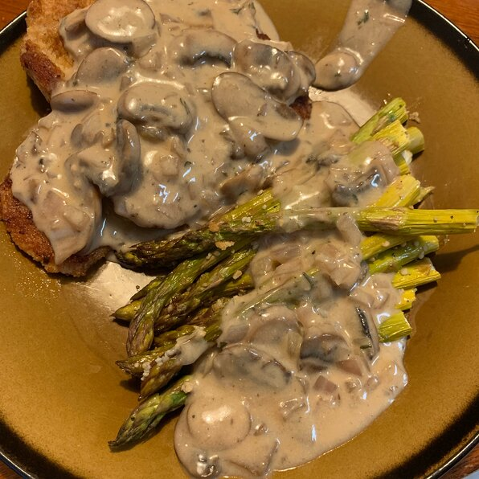

Jagerschnitzel
Description
This is a delicious dish I ordered again and again when I was stationed in Germany with the Army.
It is best served with French fries to clean up the remaining gravy and a nice garden salad.
Ingredients
- 1 cup bread crumbs
- 1 tablespoon all-purpose flour
- salt and pepper to taste
- 2 tablespoons vegetable oil
- 4 pork steaks or cutlets, pounded thin
- 1 cube beef bouillon
Steps
- In a shallow dish, mix together the bread crumbs and flour. Season with salt and pepper.
Place the egg in a separate dish. Heat oil in a large skillet over medium-high heat.
Dip pork steaks in egg, then coat with the bread crumb mixture.
Fry in the hot oil until browned on both sides and cooked through, about 5 minutes per side.
- Remove the pork to a platter and keep warm. Add onion and mushrooms to the skillet and cook until lightly browned.
Pour in water and dissolve the bouillon cube. Simmer for about 20 minutes.
Stir together the cornstarch and sour cream; stir into the skillet.
Cook over low heat until thickened but do not boil.
Spoon over the pork cutlets and serve immediately
